Weeks 3 and 4
Researchers measure 40 different outcomes in a wellness intervention. They report that 3 outcomes are statistically significant at \(p<0.05\), and conclude that the intervention is effective. They do not mention any adjustment for multiple testing.
In a follow-up analysis, they apply Bonferroni correction and none of the outcomes remain significant. Another researcher argues that Bonferroni is “too conservative” and that FDR control would be more appropriate.
What concerns do you have with the original analysis?
What information would you want before deciding how to adjust for multiple testing?
Do you agree that FDR is automatically “better” because it gives more discoveries? Why or why not?
Suppose that
\[ y_1,\ldots,y_n \overset{\text{i.i.d.}}{\sim} N(\mu,\sigma^2). \]
We often use the sample mean to estimate \(\mu:\widehat\mu=\frac{1}{n}\sum_{i=1}^n y_i.\).
Why not use another estimator?
Is there a setting in which \(\widehat\mu_4\) is better than the others?
\[ \begin{aligned} E[\widehat\mu] &=E\left[\frac{1}{n}\sum_{i=1}^n y_i\right] =\frac{1}{n}\sum_{i=1}^n E[y_i] =\mu,\\[0.4em] E[\widehat\mu_2]&=E[y_1]=\mu,\\[0.4em] E[\widehat\mu_3]&=E\left[\frac{1}{n}+\bar y\right]=\frac{1}{n}+\mu,\\[0.4em] E[\widehat\mu_4] &=E\left[\frac{\sum_{i=1}^n w_i y_i}{\sum_{i=1}^n w_i}\right] =\frac{\sum_{i=1}^n w_i\mu}{\sum_{i=1}^n w_i} =\mu. \end{aligned} \]
\(\widehat\mu_3\) is biased. However, its bias approaches zero as \(n\to\infty\).
\[ \begin{aligned} \operatorname{Var}(\widehat\mu)&=\frac{\sigma^2}{n},\\ \operatorname{Var}(\widehat\mu_2)&=\sigma^2,\\ \operatorname{Var}(\widehat\mu_3)&=\frac{\sigma^2}{n},\\ \operatorname{Var}(\widehat\mu_4) &=\frac{\sum_{i=1}^n w_i^2}{\left(\sum_{i=1}^n w_i\right)^2}\sigma^2 \geq \frac{\sigma^2}{n}. \end{aligned} \]
The unweighted sample mean has the lowest variance among the unbiased estimators \(\widehat\mu\), \(\widehat\mu_2\), and \(\widehat\mu_4\).
Later in the course:
\[ \operatorname{Bias}(\widehat\theta)^2+\operatorname{Var}(\widehat\theta), \]
which is the mean squared error.
Pearson correlation measures linear dependence between two random variables.
\[ \rho_{XY} =\frac{\operatorname{Cov}(X,Y)} {\sqrt{\operatorname{Var}(X)\operatorname{Var}(Y)}} =E\left[ \frac{X-E(X)}{\sqrt{\operatorname{Var}(X)}} \frac{Y-E(Y)}{\sqrt{\operatorname{Var}(Y)}} \right]. \]
Notes:
Given data \(\{(x_i,y_i):i=1,\ldots,n\}\), estimate \(\rho_{XY}\) using
\[ \widehat\rho_{XY} =\frac{1}{n-1}\sum_{i=1}^n \left(\frac{x_i-\bar x}{s_x}\right) \left(\frac{y_i-\bar y}{s_y}\right). \]
To test \(H_0:\rho_{XY}=0\), construct
\[ T=\widehat\rho_{XY} \sqrt{\frac{n-2}{1-\widehat\rho_{XY}^2}} \sim t_{n-2} \]
when \(H_0\) is true.
When \(y_i=\beta_0+x_i\beta_1+\epsilon_i\),
\[ \widehat\beta_1=\widehat\rho_{XY}\frac{s_y}{s_x}. \]
Testing \(H_0:\rho_{XY}=0\) is equivalent to testing \(H_0:\beta_1=0\).
It can be shown that
\[ \widehat\beta_0=\bar y-\bar x\widehat\beta_1, \] With standardized \(x\) and \(y\), the intercept term would be ignored.
The statistic
\[ T=\frac{\widehat\beta_1}{\operatorname{SE}(\widehat\beta_1)} \]
produces the same \(t\) statistic and \(p\)-value as the correlation test.
The scalar notation for a multiple linear regression model is
\[ y_i=\beta_0+x_{i1}\beta_1+\cdots+x_{ip}\beta_p+\epsilon_i =\mathbf x_i^T\boldsymbol\beta+\epsilon_i, \]
where \(\mathbf x_i=(1,x_{i1},\ldots,x_{ip})^T\).
Standard assumptions:
In this lecture, we also assume \(n>p\) and there is no multicollinearity.
Stacking the observations gives
\[ \mathbf y=\mathbf X\boldsymbol\beta+\boldsymbol\epsilon, \]
where
\[ \mathbf y= \begin{bmatrix}y_1\\y_2\\\vdots\\y_n\end{bmatrix}, \quad \mathbf X= \begin{bmatrix} 1&x_{11}&\cdots&x_{1p}\\ 1&x_{21}&\cdots&x_{2p}\\ \vdots&\vdots&\ddots&\vdots\\ 1&x_{n1}&\cdots&x_{np} \end{bmatrix}, \quad \boldsymbol\beta= \begin{bmatrix}\beta_0\\\beta_1\\\vdots\\\beta_p\end{bmatrix}, \quad \boldsymbol\epsilon= \begin{bmatrix}\epsilon_1\\\epsilon_2\\\vdots\\\epsilon_n\end{bmatrix}. \]
If
\[ \epsilon_i\sim N(0,\sigma^2) \quad\text{and}\quad \operatorname{Cor}(\epsilon_i,\epsilon_{i^*})=0 \text{ for } i\neq i^*, \]
then
\[ \boldsymbol\epsilon\sim N_n(\mathbf 0,\sigma^2\mathbf I_n). \]
Equivalently,
\[ \boldsymbol\epsilon\sim N_n\left( \begin{bmatrix}0\\0\\\vdots\\0\end{bmatrix}, \sigma^2 \begin{bmatrix} 1&0&\cdots&0\\ 0&1&\cdots&0\\ \vdots&\vdots&\ddots&\vdots\\ 0&0&\cdots&1 \end{bmatrix} \right). \]
One-sample \(t\) test
\[ y_i=\beta_0+\epsilon_i, \qquad H_0:\beta_0=c, \qquad \mathbf X=\begin{bmatrix}1\\1\\\vdots\\1\end{bmatrix}. \]
Two-sample \(t\) test (where \(x_i=1\) for group 1 and \(x_i=0\) for group 2.)
\[ y_i=\beta_0+x_i\beta_1+\epsilon_i, \qquad H_0:\beta_1=0, \qquad \mathbf X=\left[ \begin{array}{cc} 1 & 1 \\ 1 & 1 \\ \vdots & \vdots \\ 1 & 1 \\[0.2em] 1 & 0 \\ 1 & 0 \\ \vdots & \vdots \\ 1 & 0 \end{array} \right] \]
Formulate a one-way ANOVA as a linear model:
\[ y_i = \beta_0+x_{i1}\beta_1+x_{i2}\beta_2+\epsilon_i, \qquad H_0:\beta_1=\beta_2=0. \]
Here,
If we have \(G\) groups, we use \(G-1\) dummy variables. Including an indicator for every group, together with an intercept, would create perfect multicollinearity and prevent the parameters from being identified.
\[ \mathbf X= \left[ \begin{array}{ccc} 1 & 1 & 0\\ 1 & 1 & 0\\ \vdots & \vdots & \vdots\\ 1 & 1 & 0\\[0.2em] 1 & 0 & 1\\ 1 & 0 & 1\\ \vdots & \vdots & \vdots\\ 1 & 0 & 1\\[0.2em] 1 & 0 & 0\\ 1 & 0 & 0\\ \vdots & \vdots & \vdots\\ 1 & 0 & 0 \end{array} \right] \]
The least-squares estimator minimizes the sum of squared errors:
\[ \widehat{\boldsymbol\beta}_{LS} =\underset{\boldsymbol\beta}{\arg\min} \sum_{i=1}^n(y_i-\mathbf x_i^T\boldsymbol\beta)^2. \]
Equivalently, it minimizes
\[ (\mathbf y-\mathbf X\boldsymbol\beta)^T (\mathbf y-\mathbf X\boldsymbol\beta), \]
or solves the score equation
\[ \mathbf X^T(\mathbf y-\mathbf X\boldsymbol\beta)=\mathbf 0. \]
\[ \widehat{\boldsymbol\beta}_{LS} =(\mathbf X^T\mathbf X)^{-1}\mathbf X^T\mathbf y. \]
It is unbiased:
\[ E[\widehat{\boldsymbol\beta}_{LS}] =(\mathbf X^T\mathbf X)^{-1}\mathbf X^TE[\mathbf y] =\boldsymbol\beta. \]
Its covariance matrix is
\[ \begin{aligned} \operatorname{Cov}(\widehat{\boldsymbol\beta}_{LS}) &=(\mathbf X^T\mathbf X)^{-1}\mathbf X^T \operatorname{Cov}(\mathbf y) \mathbf X(\mathbf X^T\mathbf X)^{-1}\\ &=\sigma^2(\mathbf X^T\mathbf X)^{-1}. \end{aligned} \]
\[ \mathbf y =\underbrace{\widehat{\mathbf y}}_{\mathbf P\mathbf y} +\underbrace{\widehat{\boldsymbol\epsilon}}_{(\mathbf I-\mathbf P)\mathbf y}, \qquad \mathbf P=\mathbf X(\mathbf X^T\mathbf X)^{-1}\mathbf X^T. \]
\[ \widehat{\mathbf y}^{,T}\widehat{\boldsymbol\epsilon}=0. \]
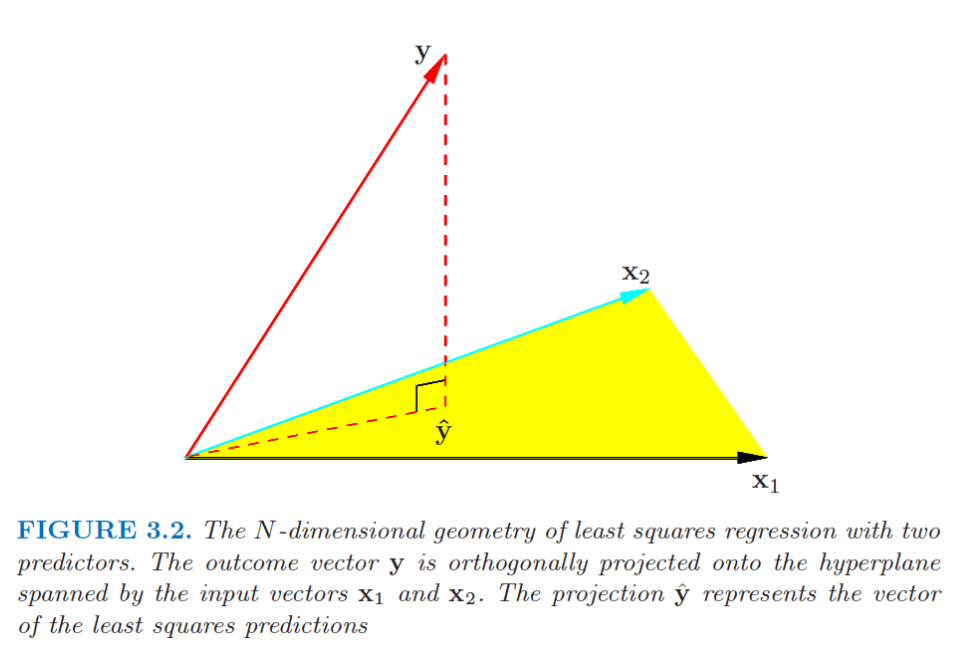
Among all possible linear, unbiased estimators of \(\mathbf a^T\boldsymbol\beta\),
\[ \mathbf a^T\widehat{\boldsymbol\beta}_{LS}, \qquad \widehat{\boldsymbol\beta}_{LS} =(\mathbf X^T\mathbf X)^{-1}\mathbf X^T\mathbf y, \]
has the lowest variance when
Therefore, \(\widehat{\boldsymbol\beta}_{LS}\) is the Best Linear Unbiased Estimator (BLUE) of \(\boldsymbol\beta\).
Implications:
Consider
\[ y_i=\beta_0+x_i\beta_1+\epsilon_i, \qquad \epsilon_i\sim N(0,\sigma^2), \]
where \(x_i=1\) for group 1 and \(x_i=0\) for group 2.
Setting \(\mathbf a=(0,1)^T\) means that \(\widehat\beta_1\) is BLUE for \(\beta_1\). Its minimum variance makes it attractive when constructing a powerful test statistic.
Note that this result relies on homoscedasticity, meaning equal variance across the groups.
For each situation, discuss whether we can conclude that the least-squares estimator is BLUE.
The errors are strongly right-skewed, but they are uncorrelated and have the same variance.
The errors are normally distributed, but their variance increases as the fitted value increases.
Each participant contributes five observations, and measurements from the same participant tend to be similar.
A researcher proposes an unbiased estimator that is a cubic function of the responses.
Optional, if interested
Let \(\widetilde{\boldsymbol\beta}=\mathbf C\mathbf y\) be another linear estimator. Write \(\mathbf C=(\mathbf X^T\mathbf X)^{-1}\mathbf X^T+\mathbf D.\)
For \(\widetilde{\boldsymbol\beta}\) to be unbiased,
\[ E[\widetilde{\boldsymbol\beta}] =\boldsymbol\beta+\mathbf D\mathbf X\boldsymbol\beta, \]
so \(\mathbf D\mathbf X=0\). Then
\[ \begin{aligned} \operatorname{Cov}(\widetilde{\boldsymbol\beta}) &=\sigma^2\mathbf C\mathbf C^T\\ &=\sigma^2(\mathbf X^T\mathbf X)^{-1}+\sigma^2\mathbf D\mathbf D^T. \end{aligned} \]
Thus,
\[ \operatorname{Var}(\mathbf a^T\widetilde{\boldsymbol\beta}) =\operatorname{Var}(\mathbf a^T\widehat{\boldsymbol\beta}_{LS}) +\sigma^2\mathbf a^T\mathbf D\mathbf D^T\mathbf a \geq \operatorname{Var}(\mathbf a^T\widehat{\boldsymbol\beta}_{LS}). \]
If \(\boldsymbol\epsilon\sim N_n(\mathbf0,\sigma^2\mathbf I)\), then
\[ L(\boldsymbol\beta,\sigma^2;\mathbf y) =\frac{1}{(2\pi\sigma^2)^{n/2}} \exp\left\{-\frac{1}{2\sigma^2} (\mathbf y-\mathbf X\boldsymbol\beta)^T (\mathbf y-\mathbf X\boldsymbol\beta)\right\}. \]
The log-likelihood is
\[ \log L(\boldsymbol\beta,\sigma^2;\mathbf y) =-\frac n2\log(\sigma^2) -\frac{1}{2\sigma^2} (\mathbf y-\mathbf X\boldsymbol\beta)^T (\mathbf y-\mathbf X\boldsymbol\beta)+C. \]
Maximizing it gives
\[ \widehat{\boldsymbol\beta}_{MLE} =(\mathbf X^T\mathbf X)^{-1}\mathbf X^T\mathbf y =\widehat{\boldsymbol\beta}_{LS}. \]
Therefore, \(\widehat{\boldsymbol\beta}_{MLE} = \widehat{\boldsymbol\beta}_{LS}\)
Under the multivariate normal model,
\[ \widehat{\boldsymbol\beta}_{MLE} \sim N_{p+1}\left( \boldsymbol\beta, \sigma^2(\mathbf X^T\mathbf X)^{-1} \right). \]
Implications:
\[ \frac{\widehat{\beta}_j - \beta_j}{\sqrt{\{\sigma^2\left(\mathbf{X^T\mathbf{X}}\right)^{-1}\}_{j,j}}} \sim \mathcal{N}(0,1)\]
\[ Z=\frac{\widehat\beta_j} {\sqrt{\{\sigma^2(\mathbf X^T\mathbf X)^{-1}\}_{jj}}} \sim N(0,1). \]
This is a \(z\) test when \(\sigma^2\) is known.
The problem is that \(\sigma^2\) is usually unknown.
The maximum likelihood estimator is
\[ \widehat\sigma^2_{MLE} =\frac{1}{n} (\mathbf y-\mathbf X\widehat{\boldsymbol\beta})^T (\mathbf y-\mathbf X\widehat{\boldsymbol\beta}). \]
However,
\[ E[\widehat\sigma^2_{MLE}] =\frac{n-p-1}{n}\sigma^2, \]
so it is biased.
Note:
\[ \frac{(\mathbf y-\mathbf X\widehat{\boldsymbol\beta}_{LS})^T (\mathbf y-\mathbf X\widehat{\boldsymbol\beta}_{LS})}{\sigma^2} \sim \chi^2_{n-p-1}. \]
\[ \frac{X}{\sqrt{Y/q}}\sim t_q. \]
\[ \frac{X/p}{Y/q}\sim F_{p,q}. \]
Under \(H_0:\beta_j=0\),
\[ T= \frac{\widehat\beta_j} {\sqrt{\{\widehat\sigma^2(\mathbf X^T\mathbf X)^{-1}\}_{jj}}}. \]
Rewrite this as
\[ T= \frac{ \widehat\beta_j/ \sqrt{\{\sigma^2(\mathbf X^T\mathbf X)^{-1}\}_{jj}} }{ \sqrt{\widehat\sigma^2/\sigma^2} }. \]
Using
\[ \widehat\sigma^2 =\frac{(\mathbf y-\mathbf X\widehat{\boldsymbol\beta})^T (\mathbf y-\mathbf X\widehat{\boldsymbol\beta})}{n-p-1}, \]
the numerator is standard normal and the squared denominator is \(\chi^2_{n-p-1}/(n-p-1)\). These quantities are independent under \(H_0\), so
\[ T\sim t_{n-p-1}. \]
Motivation
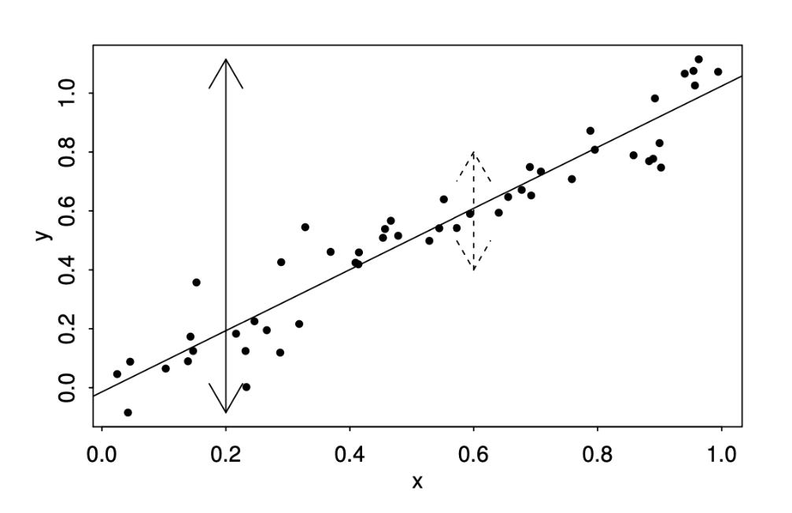
Let \(\mathbf X=[\mathbf X_1,\mathbf X_2]\). Then
\[ \min_{\boldsymbol\beta,\boldsymbol\gamma} \|\mathbf y-\mathbf X_1\boldsymbol\beta-\mathbf X_2\boldsymbol\gamma\|^2 \leq \min_{\boldsymbol\beta} \|\mathbf y-\mathbf X_1\boldsymbol\beta\|^2. \]
which implies that the addition of covariates would lead to a reduced SSE.
If I add more predictors, the fit can only improve - but is the improvement large enough to matter?
Consider the hypothesis
\[ H_0:\beta_1=\cdots=\beta_p=0. \]
In an introductory regression course, we typically extract the \(F\) statistic from the ANOVA table and compare it with an \(F\) distribution to calculate a \(p\)-value.
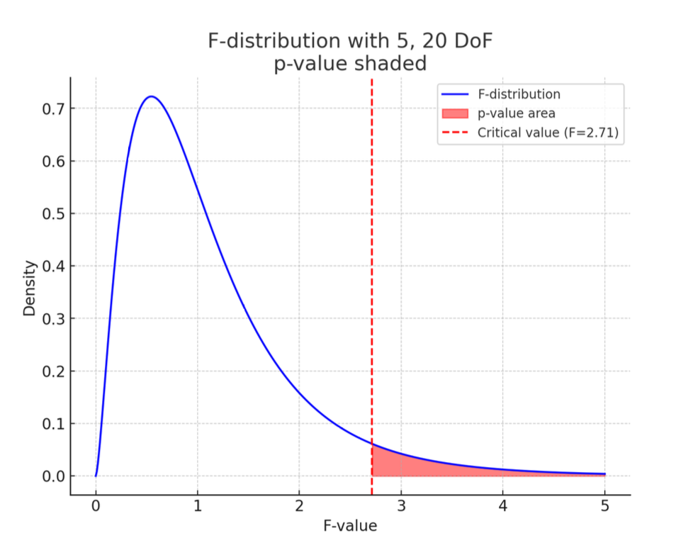
For a mean-centered response,
\[ \underbrace{\sum_{i=1}^n(y_i-\bar y)^2}_{SST} = \underbrace{\sum_{i=1}^n(y_i-\mathbf x_i^T\widehat{\boldsymbol\beta})^2}_{SSE} + \underbrace{\sum_{i=1}^n(\mathbf x_i^T\widehat{\boldsymbol\beta})^2}_{SS_{Reg}}. \]
Under \(H_0:\beta_1=\cdots=\beta_p=0\),
\[ F=\frac{SS_{Reg}/p}{SSE/(n-p-1)} \sim F_{p,n-p-1}. \]
A direct method: use distributional properties
\[ \frac{SS_{Reg}}{\sigma^2} =\widehat{\boldsymbol\beta}^{,T} \left(\frac{\mathbf X^T\mathbf X}{\sigma^2}\right) \widehat{\boldsymbol\beta} \sim\chi_p^2. \]
\[ \frac{SSE}{\sigma^2} =\frac{(\mathbf y-\mathbf X\widehat{\boldsymbol\beta})^T (\mathbf y-\mathbf X\widehat{\boldsymbol\beta})}{\sigma^2} \sim\chi^2_{n-p-1}. \]
\[ (\mathbf I-\mathbf P)\mathbf P=\mathbf0. \]
The ratio of the two scaled independent chi-squared variables therefore follows an \(F\) distribution.
\[ F_{1,n-p-1}=T_{n-p-1}^2. \]
Consider
\[ y_i=\beta_0+x_{i1}\beta_1+\cdots+x_{i8}\beta_8+\epsilon_i, \]
where:
PRICE: selling price in thousands of dollarsFLR: floor space in square feetRMS: number of roomsBDR: number of bedroomsBTH: number of bathroomsGAR: garage sizeLOT: front footage of the lotFP: number of fireplacesST: indicator for storm windows\[H_0:\beta_1-\beta_6=0.\]
\[H_0:\beta_1=\beta_6=0.\]
\[H_0:\beta_5=4,\quad\beta_8=6.\]
Each is a special case of the general linear hypothesis \[ H_0:\mathbf A\boldsymbol\beta=\mathbf c. \]
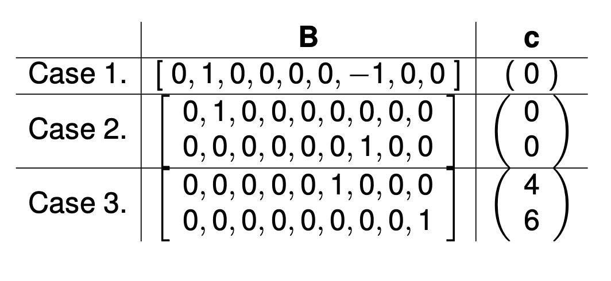
To test \(H_0:\mathbf A\boldsymbol\beta=\mathbf c\), use
\[ F= \frac{1}{q} \frac{ (\mathbf A\widehat{\boldsymbol\beta}-\mathbf c)^T [\mathbf A(\mathbf X^T\mathbf X)^{-1}\mathbf A^T]^{-1} (\mathbf A\widehat{\boldsymbol\beta}-\mathbf c) }{\widehat\sigma^2} \sim F_{q,n-p-1}, \]
under \(H_0\), where
For prediction
For inference
Violating normality is often less concerning with sufficiently large samples because the Central Limit Theorem can justify approximate inference.
Most assumptions concern the unobserved errors \(\epsilon_i\).
Under the data-generating process, \(\mathbf X\boldsymbol\beta\) and \(\boldsymbol\epsilon\) should not be associated in any way.
A residual-versus-fitted plot can reveal nonlinearity and heteroscedasticity.
A histogram or Q–Q plot of residuals can help assess normality.
Residual Plot: Linearity, Heteroscedasticity
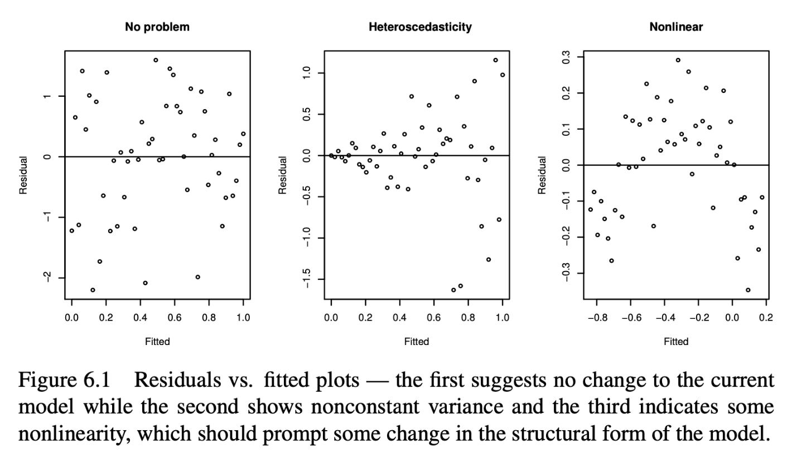
Residual-versus-fitted plots can help identify:
For heteroscedasticity, the plot only allows us to investigate whether the noise variance appears to depend on observed covariates (i.e. limited investigation).
QQ Plot: Normality
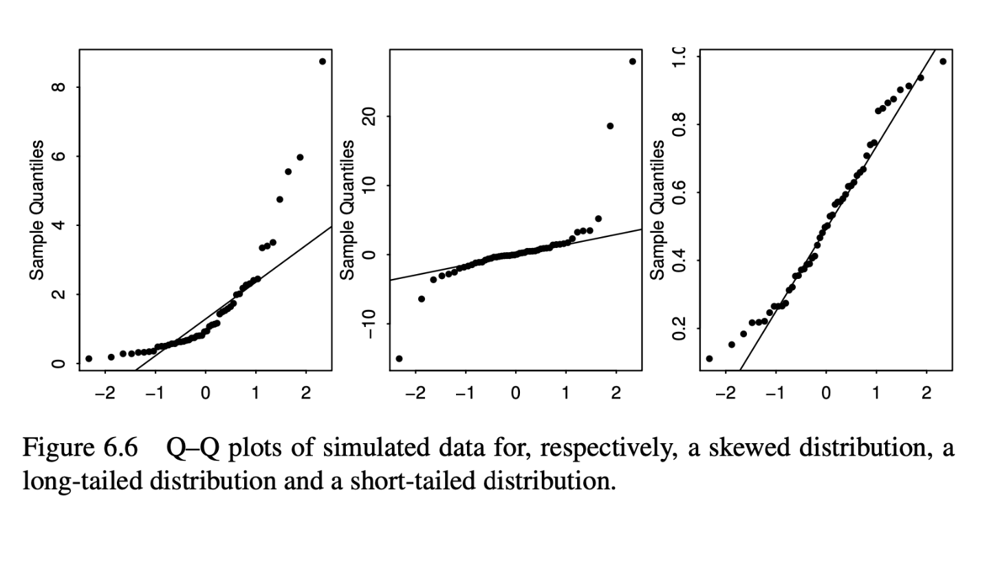
A normal Q–Q plot compares the empirical residual quantiles with the theoretical quantiles of a normal distribution.
Checking Uncorrelatedness of Errors
With \(n\) observations, there are \(n(n-1)/2\) pairs of errors whose correlations might be considered.
For example, we can build a linear model to predict the air quality since 1856 and then subsequently use this to predict earlier air quality based on proxy information.
\[ \operatorname{Cor}(\widehat\epsilon_i,\widehat\epsilon_{i+1}). \]
Checking Uncorrelatedness of Errors
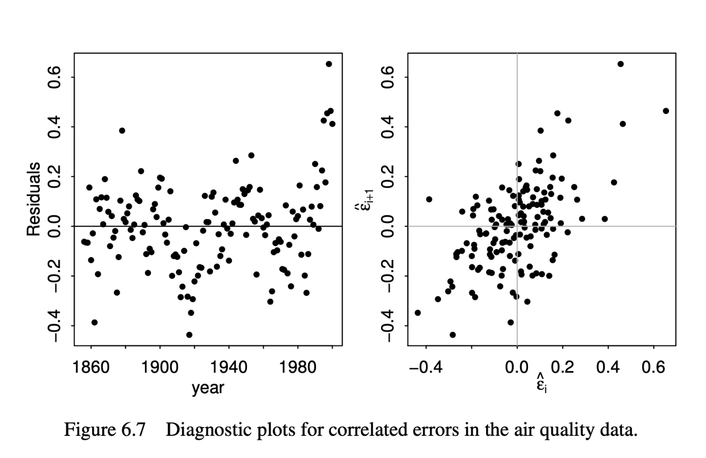
Outliers?
Real Consequence
Justify your decision and explain what the researcher should report.
Case 1: A participant’s weight is recorded as 720 kg. The original questionnaire shows that the participant reported a weight of 72.0 kg.
Case 2: An air-pollution measurement is extremely high. Maintenance records confirm that the sensor malfunctioned during that measurement.
Case 3: A household-income study includes one billionaire. The observation has a large Cook’s distance.
Case 4: An observation is correctly recorded, scientifically plausible, and belongs to the target population. Removing it changes the primary result from \(p=0.08\) to \(p=0.03\).
Case 5: A study was designed for adults aged 18–65, but researchers later discover that one enrolled participant was 16 years old.
Case 6: An air-pollution monitor records a value nearly ten times higher than its usual measurements. A wildfire was reported in the region that day. However, the monitor had also produced a calibration warning earlier that week. Nearby monitors were offline, so there are no direct measurements available for comparison.
Given known positive variance factors \(w_1,\ldots,w_n\), the WLS estimator minimizes
\[ \widehat{\boldsymbol\beta}_{WLS} =\underset{\boldsymbol\beta}{\arg\min} \sum_{i=1}^n\frac{1}{w_i} (y_i-\mathbf x_i^T\boldsymbol\beta)^2. \]
If \(\mathbf W=\operatorname{diag}(w_1,\ldots,w_n)\), then
\[ \widehat{\boldsymbol\beta}_{WLS} =\underset{\boldsymbol\beta}{\arg\min} (\mathbf y-\mathbf X\boldsymbol\beta)^T \mathbf W^{-1} (\mathbf y-\mathbf X\boldsymbol\beta), \]
and
\[ \widehat{\boldsymbol\beta}_{WLS} =(\mathbf X^T\mathbf W^{-1}\mathbf X)^{-1} \mathbf X^T\mathbf W^{-1}\mathbf y. \]
Consider instead
\[ y_i=\mathbf x_i^T\boldsymbol\beta+\epsilon_i, \qquad \epsilon_i\sim N(0,w_i\sigma^2), \]
with independent errors. In matrix form,
\[ \mathbf y=\mathbf X\boldsymbol\beta+\boldsymbol\epsilon, \qquad \boldsymbol\epsilon\sim N_n(\mathbf0,\sigma^2\mathbf W). \]
If the error variances differ, ordinary least squares may no longer have the smallest variance.
Both estimators are unbiased:
\[ E[\widehat{\boldsymbol\beta}_{LS}]=\boldsymbol\beta, \qquad E[\widehat{\boldsymbol\beta}_{WLS}]=\boldsymbol\beta. \]
Their covariance matrices differ:
\[ \operatorname{Cov}(\widehat{\boldsymbol\beta}_{LS}) =\sigma^2(\mathbf X^T\mathbf X)^{-1} \mathbf X^T\mathbf W\mathbf X (\mathbf X^T\mathbf X)^{-1}, \]
whereas
\[ \operatorname{Cov}(\widehat{\boldsymbol\beta}_{WLS}) =\sigma^2(\mathbf X^T\mathbf W^{-1}\mathbf X)^{-1}. \]
Which estimator is more efficient under this heteroscedastic model?
Consider the following transformation:
\[ \underbrace{\mathbf W^{-1/2}\mathbf y}_{\mathbf y^*} = \underbrace{\mathbf W^{-1/2}\mathbf X}_{\mathbf X^*} \boldsymbol\beta + \underbrace{\mathbf W^{-1/2}\boldsymbol\epsilon}_{\boldsymbol\epsilon^*}. \]
Now \(\operatorname{Var}(\boldsymbol\epsilon^*)=\sigma^2\mathbf I,\) (constant variance), where GMT is applicable
Therefore, \([(\mathbf X^*)^T\mathbf X^*]^{-1}(\mathbf X^*)^T\mathbf y^*\) is the BLUE for \(\boldsymbol{\beta}\)! - But it is equivalent to \(\widehat{\boldsymbol\beta}_{WLS}\)
Note that in this case, \(\widehat{\boldsymbol\beta}_{WLS} = \widehat{\boldsymbol\beta}_{MLE}\), but \(\widehat{\boldsymbol\beta}_{WLS} \neq \widehat{\boldsymbol\beta}_{LS}\)
A plausible scenario is that variance depends on a covariate:
\[ y_i\sim N(\beta_0+x_i\beta_1,\sigma^2x_i^2). \]
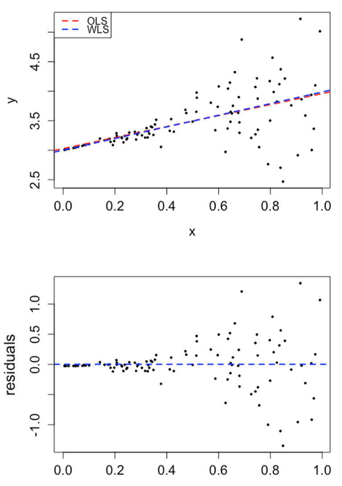
Repeated simulations show that WLS can substantially reduce standard errors relative to LS when the variance weights are correctly specified.
If the weights are misspecified, WLS may lose this advantage. The variance model therefore requires careful justification.
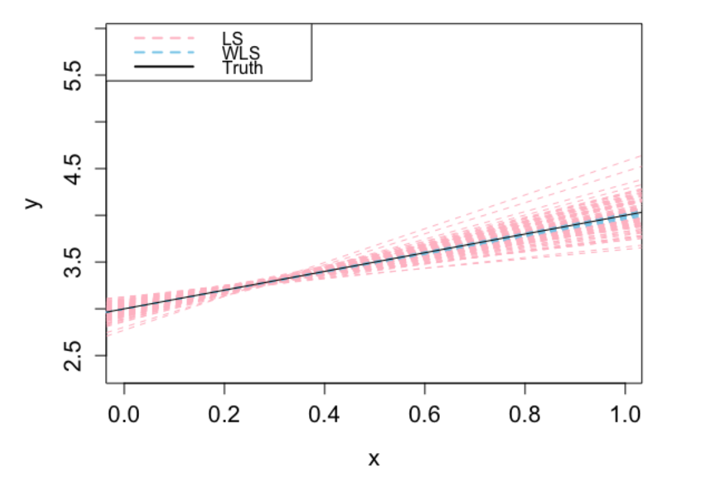
Suppose the true model is \(E[\mathbf y]=\mathbf X_1\boldsymbol\beta_1,\) where \(\mathbf X_1\) contains the first \(k\) columns of \(\mathbf X=(\mathbf X_1,\mathbf X_2)\). Then
\[ E[\widehat{\boldsymbol\beta}] =(\mathbf X^T\mathbf X)^{-1}\mathbf X^T\mathbf X_1\boldsymbol\beta_1 = \begin{bmatrix}\boldsymbol\beta_1\\\mathbf0\end{bmatrix}. \]
Therefore, \(\widehat{\boldsymbol{\beta}}\) is (still) unbiased for \(\boldsymbol{\beta_1}\)
The fitted values are also unbiased:
\[ E[\widehat{\mathbf y}] =\mathbf X \begin{bmatrix}\boldsymbol\beta_1\\\mathbf0\end{bmatrix} =\mathbf X_1\boldsymbol\beta_1. \]
Because \((\mathbf I-\mathbf P)\mathbf X=\mathbf0\),
\[ E[\widehat\sigma^2]=\sigma^2. \]
Including unnecessary variables does not introduce bias under these assumptions.
If adding unnecessary covariates does not induce bias, why avoid it?
Bias is not the only consideration. In the overfitted model,
\[ \operatorname{Cov}(\widehat{\boldsymbol\beta})_{1:k,1:k} =\sigma^2(\mathbf X^T\mathbf X)^{-1}_{1:k,1:k} \neq \sigma^2(\mathbf X_1^T\mathbf X_1)^{-1}. \]
By the Gauss–Markov theorem, estimating unnecessary coefficients increases the variability of the estimated coefficients of interest.
Suppose the true model is \(E[\mathbf y]=\mathbf X\boldsymbol\beta+\mathbf Z\boldsymbol\gamma,\) but the fitted model uses only \(\mathbf X\). Then
\[ E[\widehat{\boldsymbol\beta}] =\boldsymbol\beta +(\mathbf X^T\mathbf X)^{-1}\mathbf X^T\mathbf Z\boldsymbol\gamma. \]
The fitted values satisfy
\[ E[\widehat{\mathbf y}] =\mathbf X\boldsymbol\beta+\mathbf P\mathbf Z\boldsymbol\gamma. \]
Also,
\[ E[\widehat\sigma^2] =\sigma^2+ \frac{\boldsymbol\gamma^T\mathbf Z^T(\mathbf I-\mathbf P)\mathbf Z\boldsymbol\gamma} {n-p-1} \geq\sigma^2. \]
Simpson’s paradox: a trend appears within several groups but disappears or reverses when the groups are combined.
A confounder is associated with both the response and a predictor.
For example,
\[ y_i=\beta_0+x_i\beta_1+z_i\beta_2+\epsilon_i \]
and
\[ z_i=\gamma_0+x_i\gamma_1+\delta_i. \]
If \(z_i\) is omitted, the simple-regression slope has bias \(\gamma_1\beta_2\). The direction and size of the omitted-variable bias depend on both the association between \(x\) and \(z\) and the effect of \(z\) on \(y\).
An ecological fallacy occurs when conclusions about individuals are incorrectly drawn from group-level patterns.
For example, suppose \(z\) is a two-group factor such as sex. A regression line fitted after combining the groups can differ substantially from the within-group relationship obtained after adjusting for \(z\).
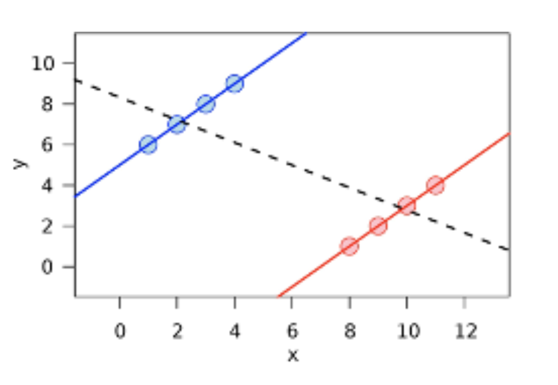
Which model is better?
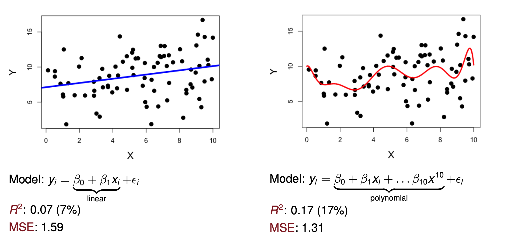
The goal is not to fit the observed data perfectly. We want to understand the population that generated the data and predict new observations well.
When performance is evaluated on new data (blue points):
Although the polynomial fits the training data better, the linear model generalizes better in this example.
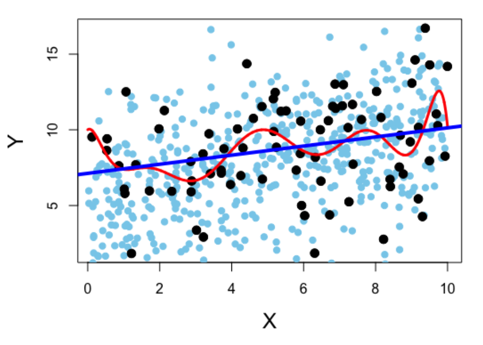
How should we choose a subset of predictors?
Common approaches include:
Testing-based procedures are generally not recommended as the primary selection strategy. The other approaches explicitly account for complexity or out-of-sample performance.
Forward selection
Backward selection
Stepwise selection
Advantages:
Disadvantages:
For a model \(M\),
\[ R^2(M)=1-\frac{SSE(M)}{SST} =\operatorname{Cor}(\mathbf y,\widehat{\mathbf y})^2, \]
where
\[ SSE(M)=\|\mathbf y-\widehat{\mathbf y}_M\|_2^2, \qquad SST=\|\mathbf y-\bar y\mathbf1\|_2^2. \]
Adding covariates can only decrease the training SSE, so \(R^2\) can only increase.
Therefore, \(R^2\) tends to favor larger models and is most useful when comparing models with the same number of predictors.
\[ R^2_{adj}(M) =1- \frac{SSE(M)/(n-p_M)}{SST/(n-1)} =1-\frac{\widehat\sigma_M^2}{\widehat\sigma_{null}^2}. \]
Choose the model with the lowest information criterion.
\[ AIC(M)=-2\log L_M(\widehat\theta)+2p_M, \]
\[ BIC(M)=-2\log L_M(\widehat\theta)+\log(n)p_M. \]
Both criteria balance model fit against complexity.
For \(n\geq8\), \(\log(n)>2\), so BIC penalizes additional parameters more strongly than AIC.
Practical distinction:
Optional, if interested
Motivation of AIC: The Kullback–Leibler divergence from a candidate model \(g\) to the true density \(f\) is
\[ KL(f,g)=\int \log\left\{\frac{f(z)}{g(z;\theta)}\right\}f(z)\,dz. \]
It measures the discrepancy between the fixed true distribution \(f\) and a candidate model \(g\).
Properties:
\[ KL(f,g)=-\int\log g(z;\theta)f(z)\,dz+C. \]
Optional, if interested
AIC and KL-divergence relationship
Because \(\theta\) is unknown, substitute the MLE from the observed data \(\mathbf Y\):
\[ \Delta :=-\int \log g(z;\widehat\theta_{MLE})f(z)\,dz =-E_Z[\log g(Z;\widehat\theta_{MLE})], \]
where \(Z\) is independent of the training data \(\mathbf Y\).
For linear regression with known \(\sigma^2\), it can be shown that
\[ E_{\mathbf Y}[AIC] =E_{\mathbf Y}[2\Delta]+C. \]
This motivates AIC as an estimate of expected out-of-sample discrepancy, up to an additive constant.
Optional, if interested
Consider a linear model with known \(\sigma^2\) and a candidate submodel
\[ \mathbf y=\mathbf X_p\boldsymbol\beta_p+\boldsymbol\epsilon. \]
Under regularity conditions and a large-sample approximation to the marginal likelihood, the BIC arises as
\[ BIC=-2\log L(\widehat\theta)+p\log n. \]
Smaller BIC values provide stronger approximate evidence for a candidate model.
Cross-validation partitions the data into non-overlapping subsets and estimates predictive performance on observations that were not used to fit the model.
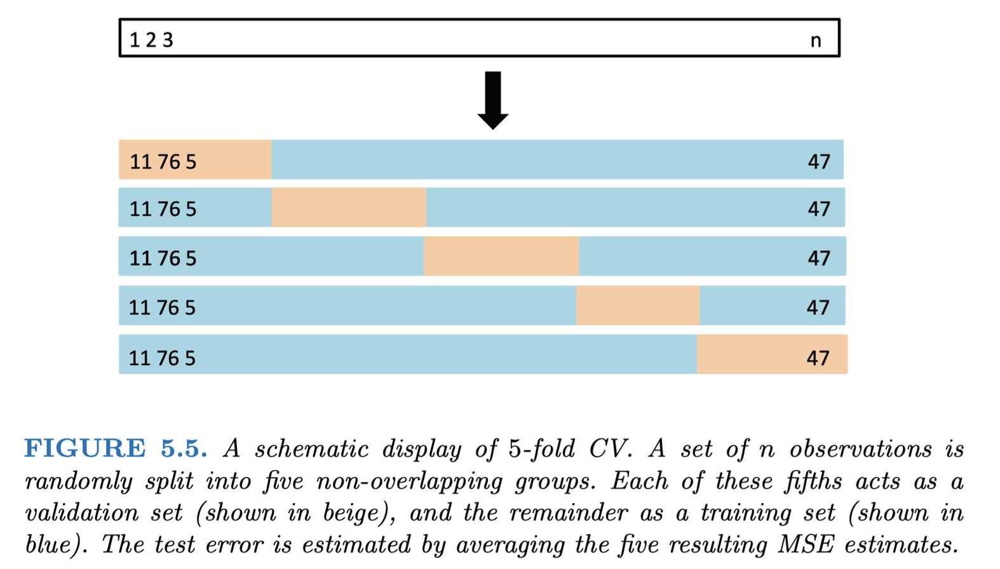
To compare candidate models:
\[ MSE_{test}=\frac{1}{n_{test}} \|\mathbf y_{test}-\widehat f_{train}(\mathbf X_{test})\|_2^2. \]
The test fold must remain completely separate from model training.
Suppose we want to predict LDL cholesterol using expression levels from 20,000 genes for 700 subjects. We first screen all 20,000 genes using the full dataset, retain 50 genes with the smallest \(p\)-values, and then compare classifiers using 10-fold cross-validation.
This procedure is invalid because the held-out observations influenced which genes entered the model.
Information from the test folds has leaked into training, producing an overly optimistic estimate of predictive performance.
Feature selection must occur separately within each training fold.
For each fold:
Any data-dependent preprocessing must occur inside the cross-validation loop, including variable selection, imputation, scaling, and tuning.
We’ve covered quite a few topics over the last few weeks but what ties them all together is that all topics are related to linear models. Some methods (such as cross validation) can be extended to other types of models, but introducing them via linear models is the most natural.
Next two lectures: Generalized Linear Models
Announcements: First assignment due Oct 2nd